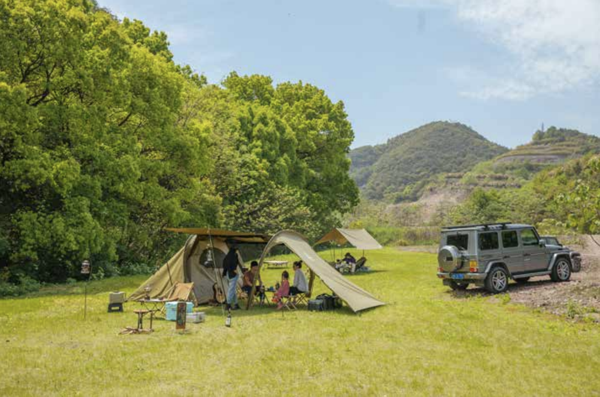

In Hangzhou, “glamping” became a portable aesthetic system: lighting, storage, outfits, and objects reorganize outdoor life into a curated scene.

This is a lifestyle report written through objects and scenes. By following how people build camp “sets”— lights, storage boxes, tripods, coffee, outfits—it tracks how an outdoor hobby turns into an urban aesthetic and a consumer system.
Excerpt 1: Looks Great
“They really know how to do it.” After a walk around the Senhai campsite, this was the comment I heard most. In daylight I finally saw the place clearly: a lake separates the lawn from a sales office across the water, and warning lines fence off the perimeter. “The worst thing is waking up and realizing you’re being watched,” Zhang Dapeng explained. He Lei, Yi Zuo, and Wang Jingmin were considered among the people who “do it well.” The three families are friends; with the pandemic keeping them from traveling abroad, they were drawn to this new kind of trip and began camping together frequently last year. This time they came without spouses or kids—“we barely slept the night before, we were too excited.”
How do you tell a beginner from an experienced glamping camper? He Lei pointed to a tent in the distance: “They still have a plastic bag next to the table—definitely new.” In this scene, storage is a serious discipline. Before every trip, he thinks through what to bring and what not to, how each item should be placed, and how it should be packed away. “When you’re new and you can’t decide, a plastic bag shows up at camp. Over time things get tidier. The more complicated, the more of a beginner. We’re at the stage where it’s clean and not too much stuff; the next stage is making every single thing exquisite—small but refined.”
For what they call the Zhejiang glamping circle, aesthetics matter most. “You don’t even need a formal campsite—any flat grass will do. Hangzhou has lots of great places for camping.” He Lei has a yard, and sometimes he simply pitches a tent at home. Once the tent is up, he said it felt like hosting a rotating banquet—guests coming and going in waves.
Excerpt 2: Mountain Style Blows into the City
When we learned that Wang Jingmin—after “getting into” glamping—had opened a concept store selling camping gear this year, we asked to visit. It wasn’t just curiosity about him. After two days in Hangzhou, I was surprised by things I’d never noticed on previous trips: the city already had so many camping-related scenes. Hangzhou had long since moved camping into the city.
On the weekend, the botanical garden by West Lake hosted a large-scale tent market. The crowd was dense, and everyone took their outfits seriously. Ritual may be the most important part of urban camping. “Glamping,” also called “style camping,” promotes an individual style—from clothing to the way a tent is set up.
Wang Jingmin used to be an interior designer. His “Urban C-lab Studio” café-shop sits in a high-rise in Binjiang with a view of the Qiantang River. The moment I walked in, I saw what Hangzhou campers treat as a bible: the Japanese outdoor magazine Go Out.
Excerpt 3: Tent Hotels
So for beginners without any gear, is there still a way to experience this kind of camping? Even after days of observing Hangzhou’s camping culture, we never got to truly try it ourselves. Tent hotels seemed to offer a solution for people like us—those who don’t want to burn cash on a full set of equipment immediately, and don’t have veteran friends to tag along with.
Nomancamp is a Hangzhou-based provider of “tent hotel” services. Before 2017, the company mainly ran homestays; later it began trial tent camping on lawns near Tonglu homestays. Feedback was good, but the market was still small compared with homestays, and many people still saw camping as “enduring hardship.”
From the Zhoushan pier, a boat ride of nearly 20 minutes takes you to Nomancamp’s Cishan Island site. Walk across a stretch of tidal flats and you reach a flatter part of the island, where several tents—with latex mattresses already inside—are set up in advance, ideal for “check-in-with-a-bag” beginners.